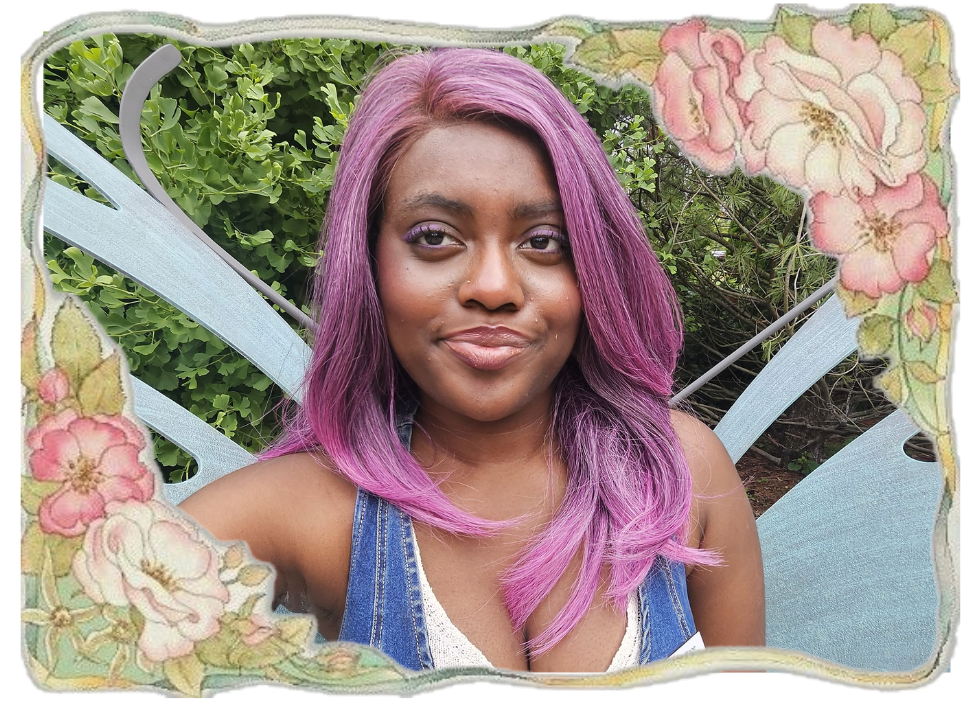

Hi! I'm Divine
I'm a Sociology and Data Analytics student at the University of Illinois Chicago, with a foundation in software development from College of DuPage.
I'm drawn to computational sociology using data to understand how people, communities, and systems shape one another — and to building tools that make that understanding accessible. I care about human-centered technology, social impact, and the stories numbers can tell.